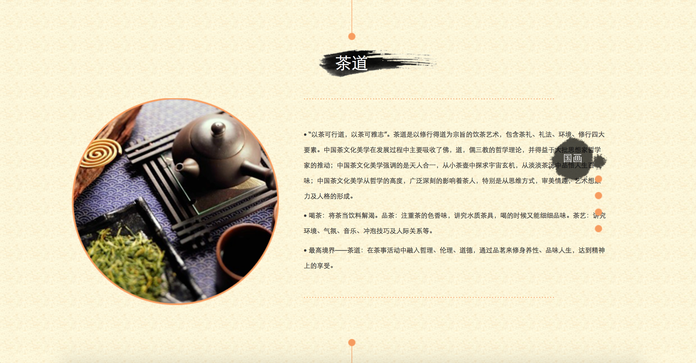

HAN
Type : Course project
Time : June 2014
What I did : Visual design / Web coding
INTRODUCTION
HAN is an individual course project of “Basic Home Page Design” and aims to help Chinese young students to learn more about their own nation, HAN.
I independently designed and coded within 1 month. Now I would like to talk about some highlights and details.
The first challenge is how to keep a strong impression of HAN nation in users’ mind. I asked many people who are around me what is the most special factor. Most of their answer are Chinese ink painting. So I added many relevant elements.
Navitation tab.
The icon of current page is a stroke painted by Chinese brush.
Bottom page
Also, in order to let users turn to any part of current page they want, I designed a navigation tab with words so that they would not continually down their mouse's scroll wheels to browse the bottom of current page.
